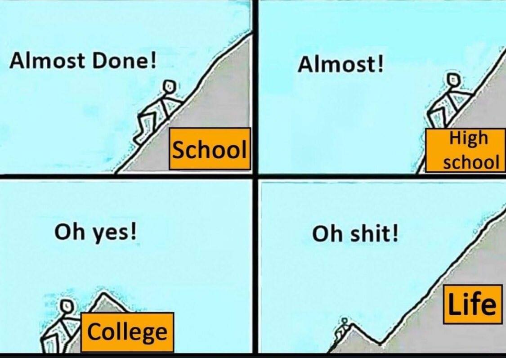
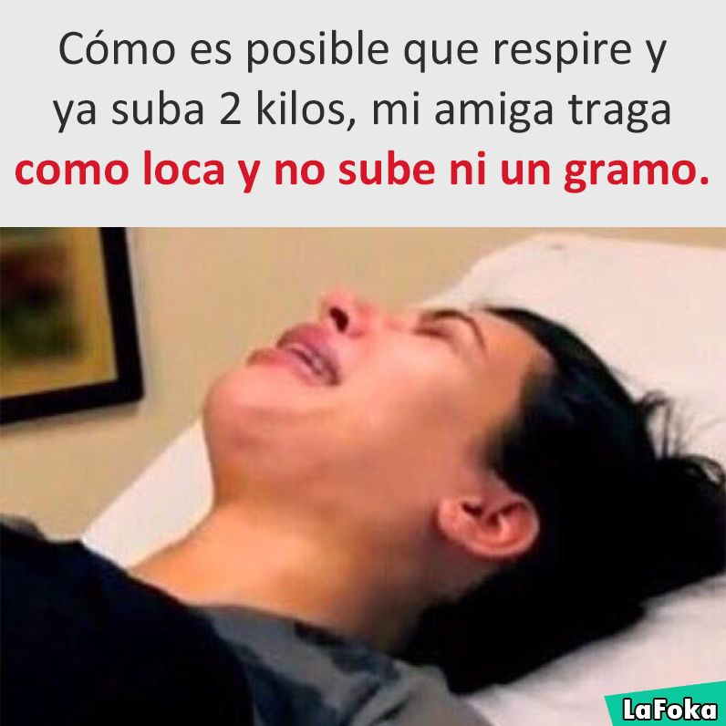

Donald Trump ranked worst president in US history by nearly 200 political scientists
Nearly 200 of America's top political scientists have voted Donald Trump the worst president in US history.
According to the 2018 Presidents & Executive Politics Presidential Greatness Survey, Mr Trump ranks even lower than disgraced President Richard Nixon – even among conservatives. Abraham Lincoln, unsurprisingly, takes the top prize. Mr Nixon sits at 33.
Mr Trump averaged a score of 12.34, bumping James Buchanan – the president who saw the US descend into the Civil War – out of the bottom spot. The result comes just months after Trump finished his first year in office as the most unpopular president in modern history.
Mr Trump’s predecessor, Barack Obama, jumped 10 places since the survey was last conducted in 2014, to spot number eight. George W Bush also climbs in the rankings, making it five places up to number 30.
Bill Clinton did not fair was well as the other living presidents, dropping five places down to 14th. Only Andrew Jackson dropped more – down six places – possibly owing to increased attention on how he treated Native Americans.
The top seven presidents remained the exact same, with Abraham Lincoln on top, followed by George Washington, Franklin Delano Roosevelt, Theodore Roosevelt, Thomas Jefferson, Harry Truman and Dwight Eisenhower.
Mr Trump was accompanied in the bottom five by Andrew Johnson, Franklin Pierce, William Harrison, and Mr Buchanan.
Researchers Brandon Rottinghaus, of the University of Houston, and Justin Vaughn, of Boise State University, said they surveyed 170 political science experts for the study. Of those experts, 57.2 per cent identified as Democrats, 12.7 per cent as Republicans, and 27.1 per cent as independents.
While Republicans and Democrats differed on how they viewed figures like Mr Obama and Mr Bush, they were in fairly close agreement on My Trump: Conservatives voted him 40th out of 45.
The one area where Mr Trump did come out on top was in the “most polarising” section, in which the researchers asked the scientists to list the five presidents they found most divisive. Mr Trump was ranked most polarising by 90 of the 170 respondents, and second-most polarising by another 20.
valen_here Volviendo a hacer unas de las cosas que más me gusta 💃🏼💃🏼 @agusroberti_ Zarpada coreografía de @marugaribotti 💕💕
crazybitchprobs_ @mymomsaysimpretty_ same boo 🙌🏻😴 usually I drink myself there tho 🤪 follow my love @mymomsaysimpretty_ @mymomsaysimpretty_ 💞
daniellamonet I never leave the house without a snack. Now I can have my fruit and chocolate all in one 😏🍫🍓🍌 try these new Chocolate Pressed by KIND bars! They’re vegan! 🙌🏽🌱 Thanks @kindsnacks! #GiveKINDaTry #CPbK
maluma NYC, nos vemos en Madison Square Garden en unas horas. Comenzamos a las 7pm!!!
thehealthyblogger Buenas buenas!!! Ya devuelta por estos pagos! 🙌🏻🇬🇧 Nada más lindo que volver con la cabeza potenciada y con muchas ideas para seguir creando y nutriendo lo que uno hace! Por acá esta combinación que me encanto! AVOCADO TOAST 🥑 con granada! Aprovechen que esta en temporada y es deli! En ensaladas, yogures, etc. Si no pueden usar congelada @elysfoods !! Estan buenisimas y van a estar presentes en mis WORKSHOP de Córdoba en 14/4!!!! Nos vemos ahí????
camilacoelho Que delicia de manhã na POP UP da @lancomeofficial no shopping JK de SP! Amei usar o Makeup Mirror pela primeira vez e interagir com os novos lançamentos! Aqui, estou usando o batom 295 Paris Café de L'Absolu Rouge - a linha mais icônica da marca, que proporciona pra cada mulher a cor, o acabamento e a atitude perfeita pra toda ocasião!💋#Lancomebrasil #LAbsoluRouge #lancommunity #ad
